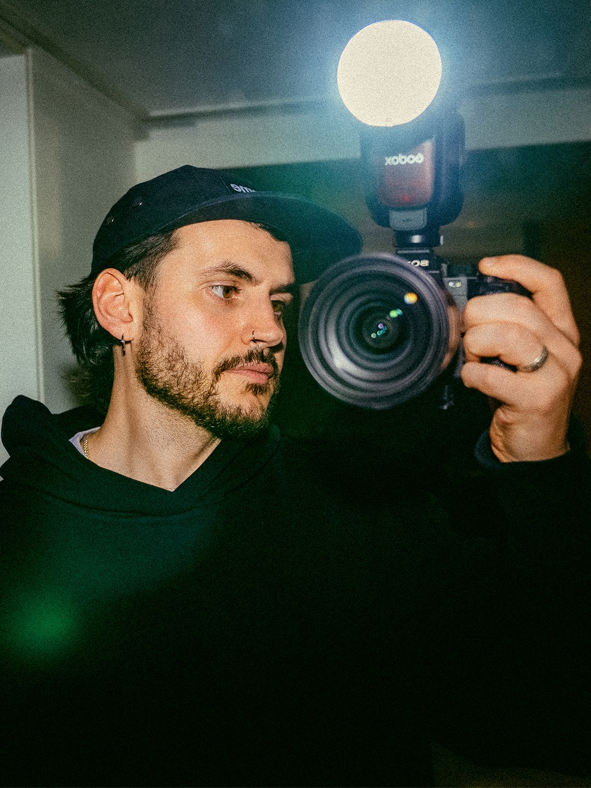
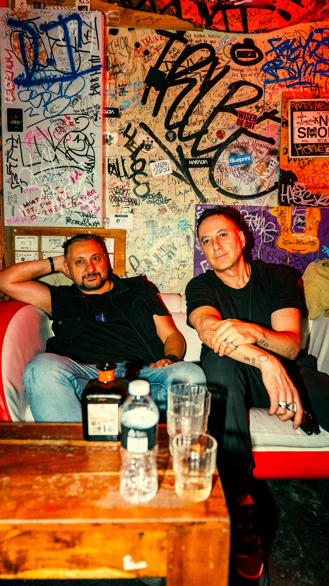
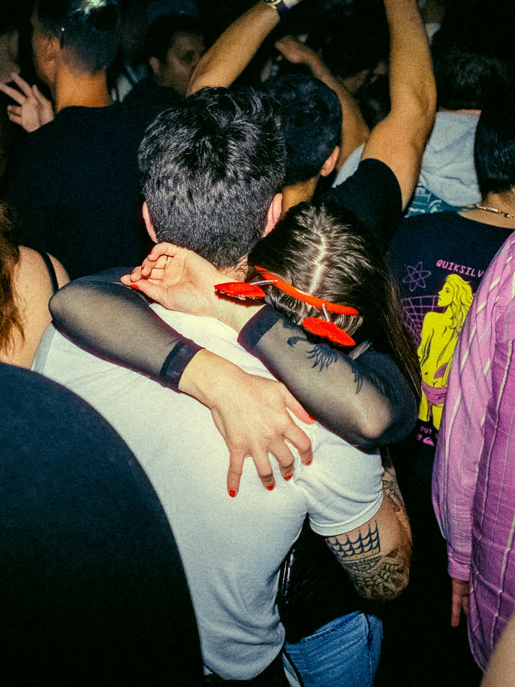
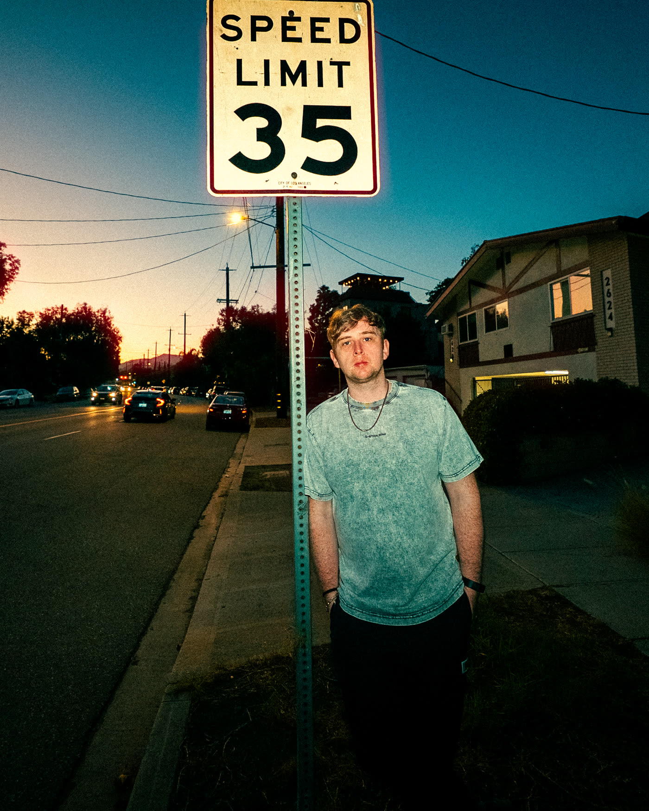
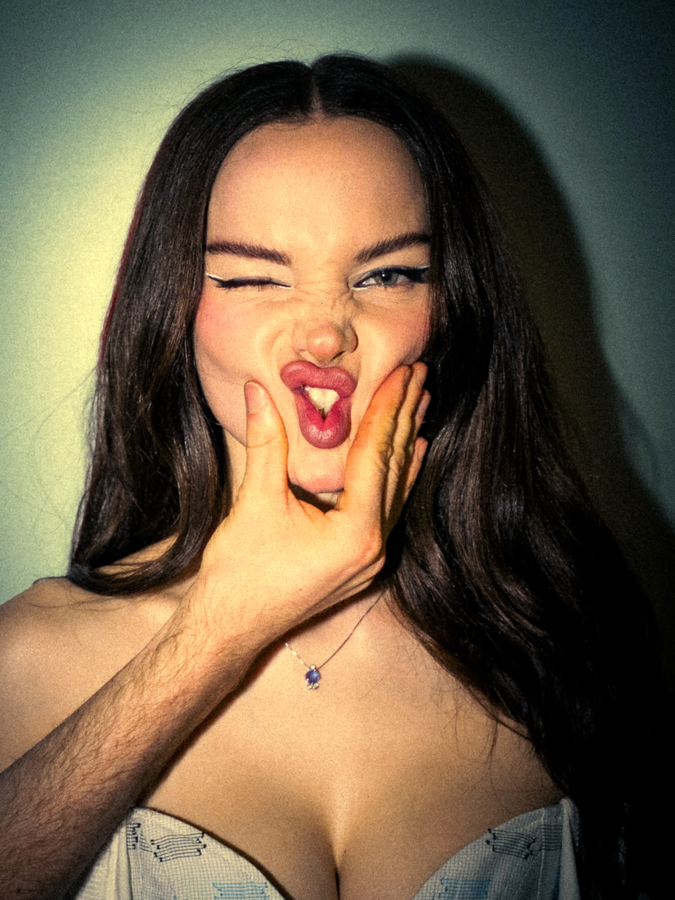

WE SHOOT
THE CHAOS.
Festivals, nightlife, artist content, travel and brand activations — shot, cut and delivered by a one-man production house that's been in the pit since day one. No stock footage. No filler. Just the real thing.
01 — WHO WE ARE
Real moments,
not staged ones.
That's the whole pitch.

Digital Wine Media is a Dublin-based production outfit, established in 2024, built for brands, artists and promoters who need content that survives a feed scroll. We work fast, we work loose, and we cut everything ourselves — camera to color to caption.
Every clip in this deck is unreleased or live client work. Nothing here is a demo reel mockup.
What we
actually do.
02 — CAPABILITIES
Five lanes, one crew. Pick one or stack them across a campaign.
Festivals & Live Events
Multi-cam recap edits, crowd energy, drone openers — turned around while the festival is still trending.
Nightlife & DJ Culture
Club nights, b2b sets, after-dark texture. We shoot low light like it's daylight.
Brand Activations
Sponsor integrations and product-in-the-wild content that doesn't feel like an ad break.
Artist & Talent Content
Music videos, press junkets, behind-the-scenes — content that holds up next to the artist's own output.
Travel & Lifestyle
Destination recaps and trip docs shot the way the trip actually felt, not how the brochure says it should.
Full Post-Production
Color, sound design, captioning and platform-specific cuts — every project leaves edit-ready, not raw.
03 — THE WORK
Selected
footage.
A cut of recent client and artist work — autoplaying, native, unedited-for-this-deck.




04 — HOW IT RUNS
From brief
to delivered.
Brief & Concept
Quick call, clear brief — what's the event, the brand, the deadline. We come back with a shot list and a tone reference, not a generic proposal.
On the Ground
We embed with the event or talent — multi-cam where it counts, run-and-gun where it doesn't. We shoot for the edit, not for the highlight reel of stills.
Cut & Color
Edit, grade, sound design — all in-house. Drafts turned around fast enough to still ride the moment's momentum.
Delivered, Platform-Ready
Vertical, square, 16:9 — whatever the channel needs, captioned and exported ready to post. No extra round trip.
05 — CASE SPOTLIGHT
Index
Season Finale
A season-closing thank-you built to cover an entire year of gigs in one hit — every artist, crew member and fan who'd shown up for Index, given a proper send-off. Shot, edited and graded solo, delivered in three days.
06 — CASE SPOTLIGHT
District X
Valentine's Drop
A street-poster brand activation shot the way the campaign actually looked on the ground — gritty, late, lit by shopfronts and phone torches. Built as a teaser cutdown for socials ahead of the main reveal.
06 — WHO WE'VE WORKED WITH
07 — LET'S MAKE SOMETHING